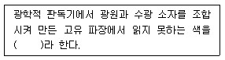

인쇄기사 (2017-05-07 기출문제)
1과목: 인쇄공학
1. 오랫동안 보관했던 잉크와 곧바로 제조된 잉크의 인쇄기상 유동성이 달라지는 원인으로 옳지 않은 것은?
- 틱소트로피 현상
- 경시변화
- 안료와 비이클의 삼차원적 구조
- 잉크의 트래핑 문제
(정답률: 90%)

2. 중첩인쇄에서 트래핑(Trapping)에 관한 설명 중 옳은 것은?
- 첫 번째 인쇄한 잉크의 택 값이 나중 인쇄한 것보다 커야 한다.
- 먼저 인쇄한 잉크는 투명해야 한다.
- 나중에 인쇄된 잉크는 어느 정도 은폐력이 있어야 한다.
- 색의 재현 방법은 혼합에 의해서다.
(정답률: 73%)
3. 어떤 잉크에 전단응력(shear stress)이 40dyne/cm2 일 때 전단속도(shear rate)가 20sec-1 이었다면 잉크의 점도(Viscosity)는 몇 poise 인가?
- 0.5
- 1
- 1.5
- 2
(정답률: 알수없음)
4. 다음 중 인쇄 잉크의 레오로지(Rheology)를 연구하는 목적으로 가장 옳은 것은?
- 인쇄 잉크의 흡유성 향상
- 인쇄 잉크의 색상성 향상
- 인쇄 잉크의 변퇴색 방지
- 인쇄 잉크의 유동 특성 규명
(정답률: 알수없음)
5. 계면장력을 사용하여 분류한 젖음형태가 아닌 것은?
- 확산 젖음
- 침투 젖음
- 부착 젖음
- 가압 젖음
(정답률: 91%)
6. 다음 고체 – 액체 접촉각 중 가장 젖음이 좋은 접촉각은?
- θ = 0°
- θ = 15°
- θ = 45°
- θ = 90°
(정답률: 알수없음)
7. 인쇄잉크가 다공성의 피인쇄체로 전이될 경우 인쇄 압력에 의한 투묘효과(anchor effects)로 발생하는 인쇄사고는?
- Rub off
- Set off
- Slur
- tinting
(정답률: 90%)
8. 반지름 크기가 0.5㎛인 망점에서 망점 주변 길이가 3.768㎛일 때의 망점 형상계수(O)는?
- 0.95
- 1.⑤
- 1.44
- 1.63
(정답률: 80%)
9. Walker-Fetsko의 잉크 전이방정식으로 옳은 것은?
- y = [x – bΦ(x)]
- y = F(x) + Y(x)
- y = F(x) [bΦ(x) + f{x – bΦ(x)}]
- y = F(x) [bΦ(x) - f{x – bΦ(x)}]
(정답률: 90%)
10. 중첩 인쇄시 인쇄순서 결정과 관계가 없는 것은?
- 잉크의 건조속도
- 안료의 입도분포
- 비이클의 투명성
- 피인쇄체의 바탕색
(정답률: 알수없음)
11. 인쇄실의 온·습도관리에 대한 설명으로 옳지 않은 것은?
- 잉크는 온도에 따라 점도가 변화되어 전이현상에 영향을 준다.
- 종이는 습도에 따라 신축률이 변화되어 화상맞춤에 영향을 준다.
- 공조기의 송풍방향과 바람의 세기를 조절할 때, 바람이 습수롤러나 잉크 등에 직접 닿게 조절한다.
- 냉방과 난방 설계시 온도가 높은 공기는 상승하고 낮은 공기는 하강한다는 원리를 이용한다.
(정답률: 알수없음)
12. 인쇄물의 색상이 광원에 따라서 달라 보이는 현상은?
- 연색성
- 포토크로미즘
- 레오로지
- 히키
(정답률: 알수없음)
13. 인쇄잉크의 택(tack)을 측정하는데 사용되는 계측장비는?
- 잉코미터(inkometer)
- 글로스미터(glossmeter)
- 리플렉토미터(reflectometer)
- 필러게이지(feeler gauge)
(정답률: 알수없음)
14. 인쇄물에 대한 주관적인 평가방법에 대한 설명으로 잘못된 것은?
- 원고에 충실한 인쇄물인가 평가한다.
- 인쇄물의 용도에 따라 평가가 달라질 수 있다.
- 예술성은 감성이므로 평가를 하지 않는다.
- 평가자에 따른 순위상관계수를 계산한다.
(정답률: 84%)
15. 포장재료로서 알루미늄박은 종이 또는 필름류와 접합하거나 코팅해서 사용한다. 다음 중 알루미늄박의 특성으로 틀린 것은?
- 공기의 투과성이 작다.
- 광선을 거의 반사한다.
- 부드럽고 가벼워서 포장에 좋다.
- 열전도성이 낮다.
(정답률: 80%)
16. 다음 인쇄 5요소 중 표면 강도가 가장 중요시 되는 것은?
- 인쇄기계
- 종이
- 잉크
- 원고
(정답률: 90%)
17. 인압 불량, 나사 자국, 파일링 등에 기인하며, 인쇄면의 잉크 농도가 균일하지 못하고 작은 반점의 농도 얼룩이 많이 나타나는 현상은?
- 프로큐레이션
- 히키
- 모틀링
- 초킹
(정답률: 알수없음)
18. 인쇄한 용지를 접어서 접장을 쪽수에 따라 모으는 것은?
- 등굴림
- 정합
- 고르기
- 접지
(정답률: 80%)
19. 인쇄 중 잉크나 지분이 블랭킷, 롤러 또는 판 위에 퇴적해 발생된 전이불량 현상은?
- 파일링
- 초킹
- 모틀링
- 히키
(정답률: 82%)
20. 어떤 물질의 외력에 대하여 직각으로 작용하는 저항력(stress)은?
- 노멀 스트레스(normal stress)
- 벡터 스트레스(vector stress)
- 전단 스트레스(shear stress)
- 유체 스트레스(Fluid stress)
(정답률: 90%)
2과목: 인쇄재료학
21. 다음 중 기계펄프에 속하지 않는 것은?
- 쇄목펄프
- 고지펄프
- 리파이너펄프
- 열기계펄프
(정답률: 60%)
22. 자외선경화잉크라고도 하며 잉크에 용제가 함유되어 있지 않기 때문에 인쇄 중에 용제증기가 발생하지 않는 것은?
- 히트세트잉크
- UV 잉크
- 퀵세트잉크
- 촉매잉크
(정답률: 84%)
23. 기록 재생이 동시에 처리되어 별도의 처리를 필요로 하지 않고, 또 명실, 건식의 조건을 구비하고 있기 때문에 화상재료로서는 이상에 가까운 기록재료는?
- 가역성재료
- 감열재료
- 자기재료
- 레이저감응재료
(정답률: 알수없음)
24. 양면 코팅된 평량 120 g/m2의 코팅지를 제조하려 한다. 이때 사용된 원지의 평량이 80 g/m2라면 한쪽 면에만 도피된 코팅제는 몇 g/m2인가?
- 40 g/m2
- 30 g/m2
- 20 g/m2
- 10 g/m2
(정답률: 80%)
25. 오프셋 윤전인쇄에서 인쇄 직후의 고온에서 잉크 건조시 종이 속의 수분이 급격하게 수증기로 변하면서 팽창되어 지층을 파괴하는 현상은?
- mottling
- speckle
- picking
- blister
(정답률: 90%)
26. 종이를 높은 습도에 두면 가장 많이 늘어나는 방향은?
- 가로 방향(CD)
- 세로방향(MD)
- 양 방향 모두
- 습도아 관련 없다.
(정답률: 64%)
27. 잉크 건조 방식 중 화학적인 방법에 해당하는 것은?
- 침투건조
- 증발건조
- 산화건조
- 냉각건조
(정답률: 알수없음)
28. 안료입자를 판에서 종이까지 운반하며 인쇄기 위에서 유동성을 계속 지니고 피인쇄체에 옮겨진 후에 고체상의 건조막을 형성시키는 기능을 하는 재료는?
- 보조제
- 비이클
- 건조제
- 산화방지제
(정답률: 82%)
29. 계면(계면활성제)에서 친수기느 물 쪽으로 친유기는 기름 쪽에서 늘어서는 것은?
- 배향
- 표면활성
- 흡착
- 양극분리
(정답률: 84%)
30. 여러 종류의 잉크 중에서 탈묵이 가장 쉬운 잉크는?
- 오프셋 윤전 잉크
- 카톤 잉크
- 그라비어 잉크
- 활판 윤전 잉크
(정답률: 70%)
31. 잉크의 피막이 분열할 때 끈적이는 정도를 나타내는 값은?
- 점도
- 비중
- pH
- 택(tack)
(정답률: 80%)
32. 다음 잉크 중 아마인유의 함량이 가장 많은 잉크는?
- 오프셋 매엽잉크
- 히트세트 윤전잉크
- 유성 그라비어잉크
- 볼록판 신문잉크
(정답률: 50%)
33. 다음 중 잉크의 건조방법이 아닌 것은?
- 산화에 의한 건조
- 중합에 의한 건조
- 침투에 의한 건조
- 압력에 의한 건조
(정답률: 알수없음)
34. 종이의 제조공정 중에서 습윤 지필의 강도를 향상시킴으로써 초지 운전 효율을 증가시키기 위해 첨가하는 약품은?
- 슬라임 조절제
- 방부제
- 습윤지력증강제
- 보류향상제
(정답률: 알수없음)
35. 인쇄잉크에 사용되는 유기안료와 무기안료의 일반적인 특성을 비교하였을 때 잘못된 것은?
- 유기안료의 은폐력은 무기안료보다 떨어진다.
- 유기안료의 내열성은 무기안료보다 떨어진다.
- 유기안료의 내용제성은 무기안료보다 떨어진다.
- 유기안료의 착색력은 무기안료보다 떨어진다.
(정답률: 62%)
36. 미국의 A. Voet가 잉크 유동성을 측정하기 위해 만든 점도계로 60초 후의 점도를 mm로 나타내는 것은?
- 평행판 점도계(spreadmeter)
- Laray 점도계
- B형 점도계
- 잔-컵(Zahn cup)
(정답률: 알수없음)
37. 다음 중 종이의 기계적 성질 시험에 해당하는 것은?
- 불투명도
- 광택도
- 치수안정성
- 인열강도
(정답률: 90%)
38. 용지의 생산시 상대 습도가 과다하게 높거나 낮은 종이는 용지의 치수 안정성을 저하시킨다. 이러한 조건의 용지를 인쇄했을 때 나타날 수 있는 가장 큰 문제점은?
- 인쇄광택의 감소
- 가늠 맞춤 불량
- 인쇄 속도의 과도한 증가
- 잉크 흡수량 증가
(정답률: 84%)
39. 평판잉크나 볼록판잉크와 같이 비교적 점도가 높은 페이스트잉크의 제조공정 중 연육과정 다음에 하는 공정은?
- 용해
- 플렉싱
- 충진
- 조정
(정답률: 73%)
40. 물속에서 섬유를 기계적으로 처리하여 초지하기에 적당하도록 만들어 주는 공정은?
- 사이징
- 충전
- 고해
- 정선
(정답률: 92%)
3과목: 특수인쇄학
41. 175선의 스크린 선수의 비가 1:8의 망점(한 변의 길이 129㎛, 스크린 선폭 16㎛)인 A와 한 변의 길이가 10% 작은 망점(한 변의 길이 116㎛, 스크린 선폭 29㎛) B가 동일한 부식 깊이일 때 A와 B의 용적비는?
- 0.50
- 0.75
- 0.81
- 0.87
(정답률: 67%)
42. 디지털 인쇄의 장점으로 볼 수 없는 것은?
- 각각 다른 인쇄를 연속으로 할 수 있다.
- 소량 인쇄에 적합하다.
- 즉시 인쇄가 가능하다.
- 인쇄판 교환이 자동으로 된다.
(정답률: 알수없음)
43. 패드 인쇄에서 패드의 역할은?
- 비화선부의 잉크를 제거
- 인쇄판 고정
- 인쇄판에 잉크 전이
- 화상을 피인쇄체에 전이
(정답률: 알수없음)
44. 그라비어 잉크의 성질을 개선하기 위하여 첨가제를 사용한다. 이 때 안료분산 기능을 향상시키기 위하여 첨가되는 물질은?
- 불소계 왁스
- 계면활성제
- 가소성을 지닌 레진
- 소포제
(정답률: 75%)
45. 스크린 인쇄 잉크 건조 형식 중 화학적 건조방법에 해당되지 않는 것은?
- 산화중합형
- 가열경화형
- 증발건조형
- 2액반응형
(정답률: 73%)
46. 플렉소그래피 인쇄기의 인쇄압을 조절하기 위한 방법이 아닌 것은?
- 아닐록스 롤러와 판통의 간견 조절
- 잉크냄 롤러와 아닐록스 롤러의 간격 조절
- 압통과 아닐록스 롤러의 간견 조절
- 판통과 압통의 간격 조절
(정답률: 알수없음)
47. 그라비어 백선 스크린의 망점 형태를 선택할 때 고려되어야 할 사항으로 가장 거리가 먼 것은?
- 모틀링(mottling) 방지 여부
- 잉크의 전이력 향상 여부
- 무리한 인쇄압 방지 여부
- 측면 부식에 의한 망점벽 손상 방지 여부
(정답률: 알수없음)
48. 플렉소 인쇄의 특징을 설명한 것으로 틀린 것은?
- 유연한 고무 또느 수지 볼록판을 사용한다.
- 피인쇄체는 지대, 지기, 연질포장지 등에 주로 인쇄한다.
- 경질의 독터 블레이드(doctor blade)를 사용하여 샤프하게 화상을 인쇄할 수 있다.
- 제판법에는 고무조각법, 감광수지법이 있다.
(정답률: 알수없음)
49. 금속 인쇄용 UV경화형 잉크에서 올리고머의 주된 역할은?
- 잉크 피막에 물성을 부여하는 역할
- 희석제 역할
- 반응개시 역할
- 촉매제 역할
(정답률: 82%)
50. 유리인쇄 잉크 중에서 무기안료와 유리분말에 왁스를 섞은 고형상의 잉크 종류는?
- 유리 컬러잉크
- 귀금속 컬러잉크
- 페이스트 컬러잉크
- 핫 컬러잉크
(정답률: 70%)
51. 라미네이트 튜브 인쇄법 중 소재를 구성하는 필름에 미리 그라비어 방식으로 인쇄하며, 후라미네이트 하여 원단을 마무리하는 방식은?
- 라이트 프린팅법
- 포스트 프린팅법
- 애프터 프린팅법
- 프리 프린팅법
(정답률: 알수없음)
52. 다음 액정인쇄 잉크의 성분 중 바인더의 재료가 아닌 것은?
- 폴리비닐알코올
- 수성알키드수지
- 젤라틴
- 아크릴아미드
(정답률: 67%)
53. 다음 괄호 안에 알맞은 용어는?

- 마젠타(magenta) 컬러
- 자외선(ultraviolet) 컬러
- 드롭아웃(drop-out) 컬러
- 시안(Cyan) 컬러
(정답률: 82%)
54. 1개 또는 4개의 분사구에서 잉크를 컴퓨터제어로 단속적으로 뿜어내어 대상물의 표면에 압력을 주거나 접촉을 하지 않고 화상을 형성시키는 인쇄방식은?
- 정전스크린 인쇄
- 정정평판 인쇄
- 잉크젯 인쇄
- 전자사진식 인쇄
(정답률: 알수없음)
55. 집적회로의 도체잉크 중 높은 신뢰도가 요구되는 곳에 사용하는 것은?
- Ag – Pd계
- Ag – Pt계
- Au – Pt계
- Cu – Pd계
(정답률: 55%)
56. 플렉소 제판의 종류 중 감광성수지 제판에서 판의 경도가 과잉일 때의 주된 원인은?
- 빛쬠 과도
- 현상 부족
- 후처리 과도
- 표면 경막처리 과도
(정답률: 70%)
57. 통장 인쇄 후 자기 테이프를 붙이는 방법으로 옳지 않은 것은?
- 열 전사
- 자외선 접합
- 접착제에 의한 가압 접합
- 접착제에 의한 가열 접합
(정답률: 60%)
58. UV 잉크조성 성분이 아닌 것은?
- 안료
- 광개시제(증감제)
- 소포제
- 이소프로필알코올
(정답률: 알수없음)
59. 300 mesh/inch/T형인 스크린 망사의 오프닝은 약 얼마인가?
- 15㎛
- 30㎛
- 45㎛
- 60㎛
(정답률: 알수없음)
60. 다음 중 열경화성 수지에 해당되지 않는 수지는?
- 에폭시 수지
- 멜라민 수지
- 페놀 수지
- 아크릴 수지
(정답률: 70%)
4과목: 인쇄색채학
61. 다음 중 표색 혼색체계에 대한 설명르로 틀린 것은?
- 표색치는 색감각에 기초한다.
- 심리물리적인 값을 사용한다.
- 표색치는 색지각에 기초한다.
- XYZ의 삼자극치를 사용한다.
(정답률: 37%)
62. 색의 순수하고 탁하거나 흐린 정도의 차이를 무엇이라 하는가?
- Hue
- Value
- Chroma
- Lightness
(정답률: 70%)
63. 디지털 인쇄에서 컬러 재현을 위해 스캐닝을 할 때 유의해야 할 점이 아닌 것은?
- 원고의 사이즈를 변경하고 싶은 경우는 스캔해상도를 반드시 고려해야한다.
- 스캔 해상도를 산출하는 방법은 스캔 해상도 = 프린터 해상도 × 확대율이다.
- 스캔 해상도는 원고가 최종적으로 어떠한 형태로 재현되는가에의해 정해진다.
- 고해상도의 컬러재현을 하기 위해서 dpi의 값을 낮게 설정해야한다.
(정답률: 알수없음)
64. Dot gain에 대한 설명으로 옳은 것은?
- 스크린된 망점이 필름이나 인쇄판보다 종이에 인쇄될 때 커지는 현상을 말한다.
- 스크린의 각도 맞춤이 제대로 되지 않을 때 발생하는 망점에 의한 주기적인 패턴이 형성되느 것을 말한다.
- 원고의 화질에 대하여 필요 이상으로 높은 해상도로 입력시킨 경우에 나타나는 현상을 말한다.
- 아날로그 데이터를 디지털 데이터로 변환시킬 때 나타나는 현상을 말한다.
(정답률: 알수없음)
65. 태양의 직사광에 의하여 조명된 물체색을 나타낼 때 사용되는 CIE 표준광은?
- 표준광 A
- 표준광 D65
- 보조 표준광 B
- 보조 표준광 D75
(정답률: 알수없음)
66. 오스트발트 색체계의 표기법 중 등백색계열(isotints)로만 구성된 것은?
- ec와 pn
- ec와 ic
- ig와 ng
- ig와 ia
(정답률: 알수없음)
67. 색광의 분광분포에 있어 파란색(Blue)광의 에너지 분포가 상대적으로 가장 높음 파장범위는?
- 300 ~ 350 nm
- 450 ~ 500 nm
- 550 ~ 600 nm
- 650 ~ 700 nm
(정답률: 알수없음)
68. 먼셀 표색계에 대한 설명으로 틀린 것은?
- 색상, 명도, 채도로 나눈 색공간이다.
- 10진법 체계를 기초한다.
- 11개의 주색상과 11단계의 명도로 구분한다.
- HV/C로 표기한다.
(정답률: 알수없음)
69. 배색의 아름다움을 계산을 구하고 그 수치로 조화의 정도를 비교하는 미도의 설명으로 틀린 것은?
- M = O / C 로 나타낸다.
- O 는 질서성의 요소이다.
- C 는 복잡성의 요소이다.
- C 가 최대일 때 M(미도)은 최대이다.
(정답률: 67%)
70. 백색량(W), 흑색량(B), 순색량(C)의 관계를 정삼각형을 기초로 하여 입체로 작도한 색입체는?
- 먼셀 색입체
- 오스트발트 색입체
- CIE 색입체
- 맥스웰 색입체
(정답률: 70%)
71. CIE 표색계에서 비시감도를 나타내는 Y는 단순히 반사율만을 나타내고 있어 시감적인 색상의 명도르 나타내기 어려운 점이 있다. 이를 보완하기 위하여 개발된 표색계는?
- NCS 표색계
- Yxy 표색계
- L*a*b* 표색계
- X10Y10Z10 표색계
(정답률: 알수없음)
72. 다음 색 중 가시광선의 영역에서 파장이 가장 긴 것은?
- 빨강
- 초록
- 파랑
- 노랑
(정답률: 70%)
73. 다음 중 컬러 원고가 지니고 있는 색성분을 산출해 내기 위해 컬러필터(R, G, B)를 사용하는 방법은?
- 필터 분해
- 잉크색 조합
- 3색 분해
- 6색 분해
(정답률: 50%)
74. 조명색이 변하더라도 물체가 가지는 고유색을 유지하는 현상은?
- 색순응
- 색채 불변성
- 색재현
- 조건등색
(정답률: 70%)
75. 네거티브, 포지티브 필름에 빛이 입사했을 때 입사광을 Ai, 투과광을 Bt 라고 하면 투과율 T = Bt/Ai 로 되는데, 이 때 투과 농도(Dt)를 구하는 식으로 옳은 것은?
- Dt = log T
- Dt = Ai/Bt
- Dt = log T2
- Dt = log (1/T)
(정답률: 70%)
76. 저드(Judd)의 조화론에서 “색채 간에 서로 공통되는 속성이나 국면이 있을 때 조화된다.”는 원리를 설명하는 것은?
- 질서의 원리
- 비모호성의 원리
- 대비의 원리
- 유사의 원리
(정답률: 알수없음)
77. 색을 색상, 명도, 채도의 삼속성으로 나누어 HV/C 라는 형식에 의해 번호로 표시한 표색계는?
- 오스트발트 표색계
- 먼셀 표색계
- CIE L*a*b* 표색계
- CIE XYZ 표색계
(정답률: 알수없음)
78. 다음 중 색차에 대한 설명으로 옳은 것은?
- CIE LAB 색공간 상의 유클리드 거리이다.
- 명도차에 채도차와 색상차를 뺀 값이다.
- 명도차에 채도차와 색상차를 더한 값이다.
- 명도차, 채도차, 색상차를 계산하면 모두 마이너스(-) 값이 구해진다.
(정답률: 46%)
79. 분광특성을 상대치로 나타낸 것은?
- 분광반사율
- 분광투과율
- 분광곡선
- 분광분포
(정답률: 60%)
80. 다음 중 거리감이 불확실하고 입체감이 없는 색은?
- 평면색
- 표면색
- 투명면색
- 공간색
(정답률: 알수없음)
5과목: 인쇄작업론 및 품질관리
81. 블랭킷에 종이가 달라붙거나 찢어지는 원인으로 가장 거리가 먼 것은?
- 물 오름량이 많을 때
- 인압이 강할 때
- 잉크의 택(tack)이 강할 때
- 그리퍼의 개폐 타이밍이 부적합할 때
(정답률: 58%)
82. 다음 중 원압식 인쇄기(cylinder press)에 속하는 기계 형식은?
- 푸트 인쇄기(foot press)
- 빅토리아 인쇄기(victoria press)
- 스톱실린더 인쇄기(stop cylinder press)
- 신문윤전 인쇄기(newspaper rotary press)
(정답률: 알수없음)
83. 잉크집은 잉크날과 잉크 롤러로 이루어져 있는데, 이 때 잉크날이 롤러에 닿는 면은 몇 도로 유지하는 것이 가장 이상적인가?
- 90°
- 30°
- 180°
- 45°
(정답률: 알수없음)
84. 베어러의 지름이 444mm 이고 실린더의 지름이 440mm일 때 언더컷은 몇 mm 인가?
- 1
- 2
- 3
- 4
(정답률: 73%)
85. 매엽 인쇄기에서 배지부의 필수장치가 아닌 것은?
- 그리퍼 개폐 캠
- 체인그리퍼
- 종이 추리개
- 가늠장치
(정답률: 알수없음)
86. 고속 인쇄에 가장 적합한 인쇄기의 가압 방식은?
- 평압식(platen type)
- 윤전식(rotary type)
- 스크린식(screen type)
- 원압식(flat-bed cylinder type)
(정답률: 알수없음)
87. 인쇄기계 종류 중 인쇄 판식에 대한 분류로 옳지 않은 것은?
- 평압 인쇄기
- 오목판 인쇄기
- 평판 인쇄기
- 볼록판 인쇄기
(정답률: 알수없음)
88. 스크린 인쇄의 가장 큰 특징이 아닌 것은?
- 인쇄된 잉크 층이 타 방식에 비하여 두꺼운 효과를 나타낸다.
- 다양한 피인쇄체, 다양한 형상에도 인쇄 가능하다.
- 타 방식에 비하여 인쇄시 적은 압력으로 사용가능하다.
- 복잡하고 작업이 어려운 설비 및 공정으로 구성되어있다.
(정답률: 알수없음)
89. 사진원고의 주제와 방향성을 강조하기 위해 불필요한 부분을 제거하여 구도를 조정하는 작업은?
- 희게 빼기
- 트리밍
- 축소 및 확대
- 지면배정
(정답률: 70%)
90. 오프셋 인쇄기에서 활동부의 국부적, 순간적 압력 분산을 위하여 실시하는 급유의 효과는?
- 감마효과
- 냉각효과
- 응력분산효과
- 기타효과
(정답률: 64%)
91. 오프셋 윤전인쇄기의 급지장치에서 텐션롤러의 주된 역할은?
- 잉크를 각 롤러에 분산
- 종이의 장력 조정
- 종이 자동 연속 급지
- 레지스터 조정
(정답률: 알수없음)
92. 축임물 롤러가 별도로 없이 잉크 묻힘 롤러중의 하나를 축임 롤러로 겸용하며, 잉크와 축임물이 동시에 전달되는 축임물 장치는?
- 달그렌 축임물 장치
- 에어 독터 축임물 장치
- 스크린 축임물 장치
- 브러시 축임물 장치
(정답률: 알수없음)
93. 판면에 잉크를 공급하는 잉크장치의 기능으로 볼 수 없는 것은?
- 잉크량을 일정하게 유지한다.
- 잉크의 유동성을 부여한다.
- 잉크피막을 균일하게 분산시킨다.
- 잉크의 건조시간을 단축시킨다.
(정답률: 62%)
94. 2롤러형 플렉소그래피 인쇄기에서 잉크 공급량의 조절은 무엇에 의하여 이루어지는가?
- 독터 블레이드(doctor blade)
- 판통(plate cylinder)의 회전 속도
- 아닐록스 롤러(anilox roller)의 홈(cell)
- 잉크집 롤러(fountain roller)의 열림 폭
(정답률: 64%)
95. 다음 중 인쇄물의 품질 관리용 차트가 아닌 것은?
- 스타 타깃(star target)
- 도트 게인 스케일(dot gain scale)
- 잉코미터(Inkometer)
- 시그널 스트립(signal strip)
(정답률: 60%)
96. 다음 중 컨벤셔널 그라비어 제판에 사용되는 감광성 재료는?
- carbon tissue
- sensitizing
- gravure cell
- etching
(정답률: 60%)
97. 그라비어(Gravure)인쇄기의 본체 구조장치가 아닌 것은?
- 건조 장치
- 천공 장치
- 독터 장치
- 판통 장치
(정답률: 70%)
98. 다음 중 윤전 오프셋 인쇄기에서 인쇄물의 품질관리에 영향을 미치는 최대 요인은?
- 인쇄 유닛
- 장력 조절 장치
- 접지 장치
- 종이 이음 장치
(정답률: 64%)
99. 다음 중 포스트스크립트 언어를 활용한 파일형식으로 비트맵, 벡터 모두 저장이 되는 파일 형식은?
- GIF
- BMP
- EPS
- PNG
(정답률: 75%)
100. 다음 중 어문저작물에 속하지 않는 것은?
- 소설
- 수필
- 강연
- 서예
(정답률: 60%)